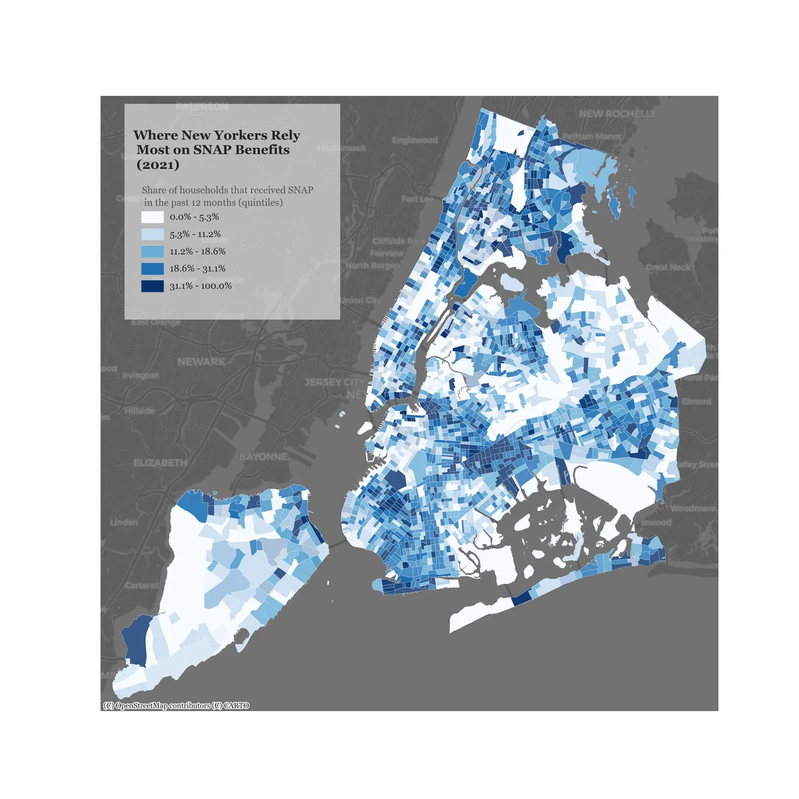
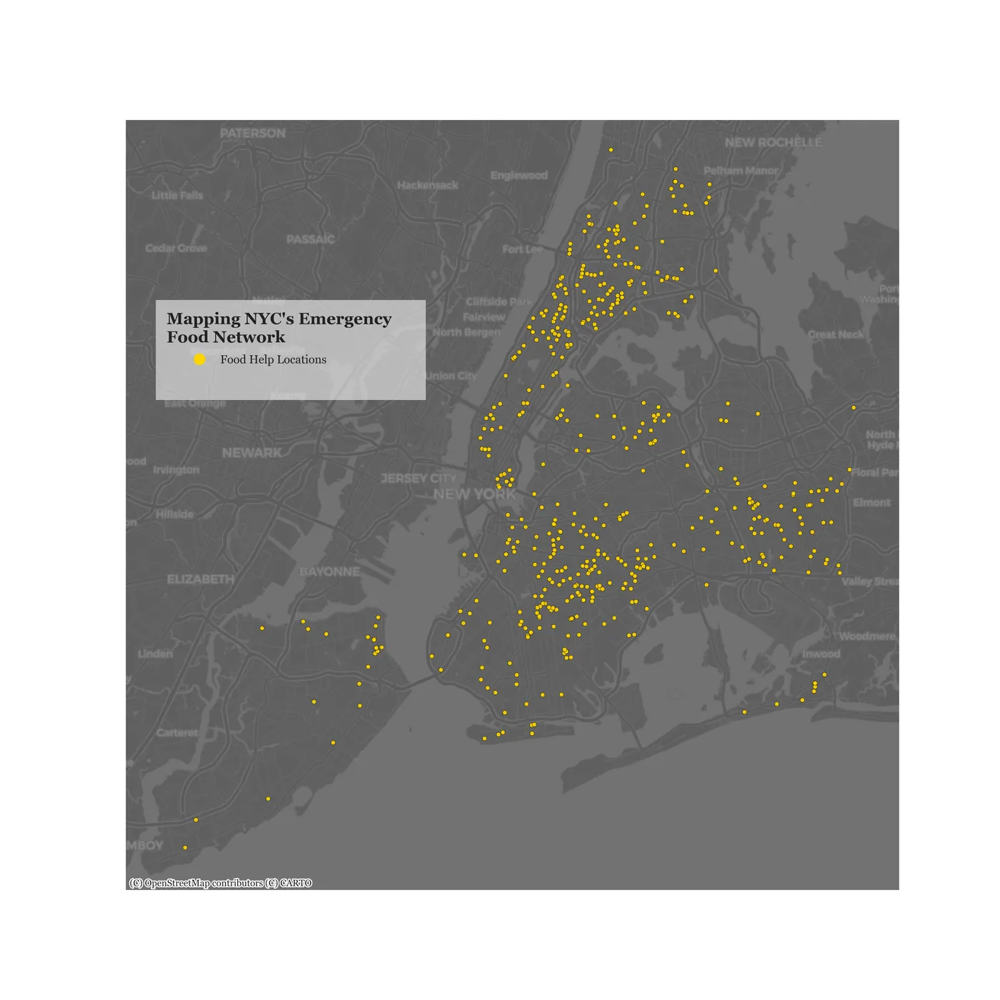
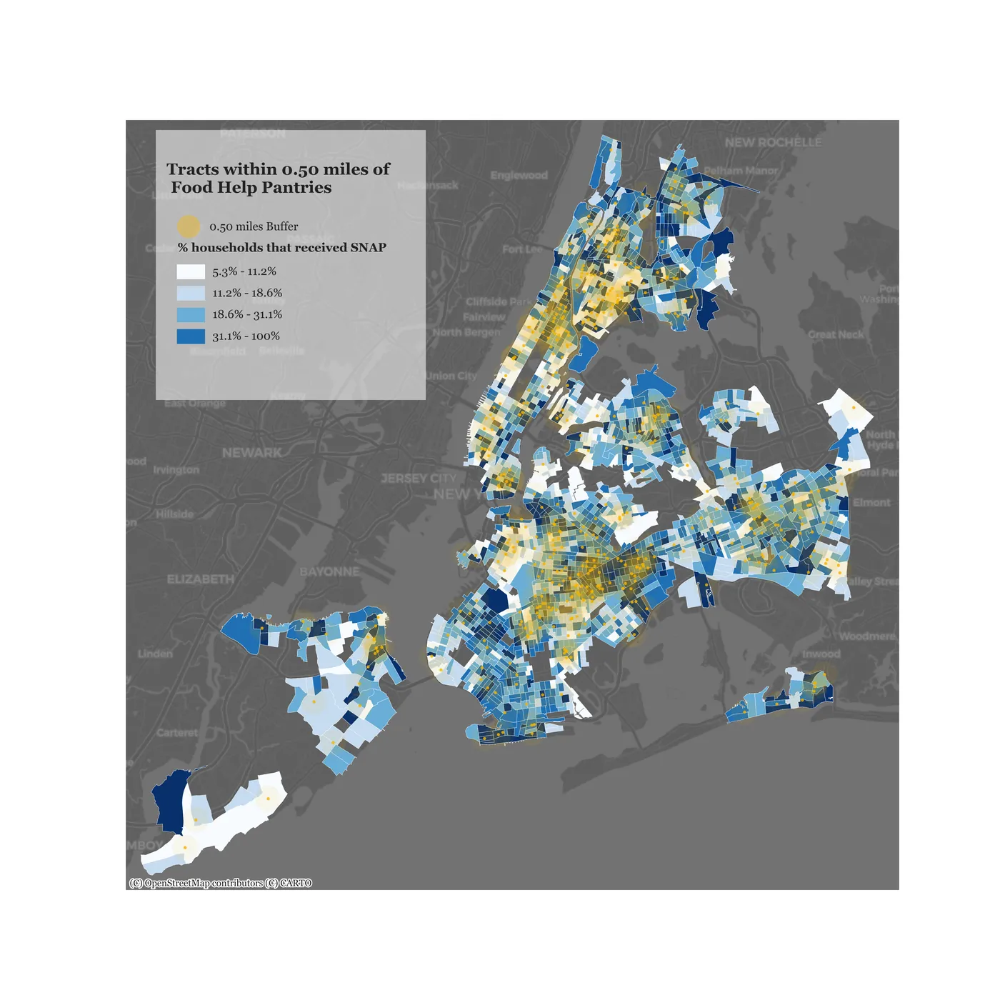
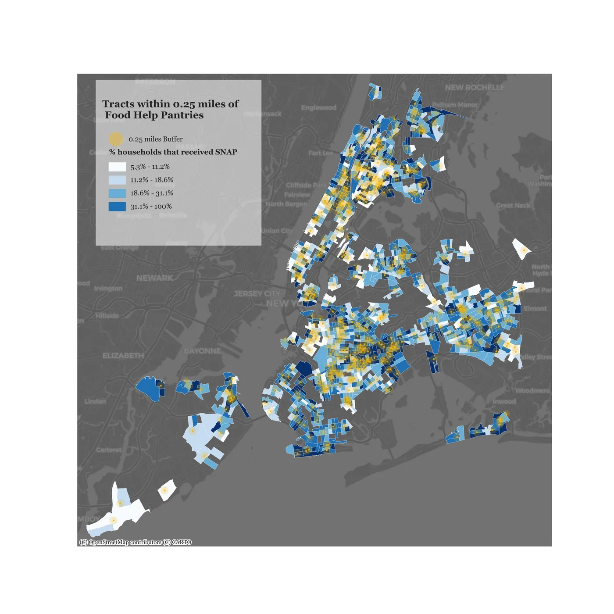
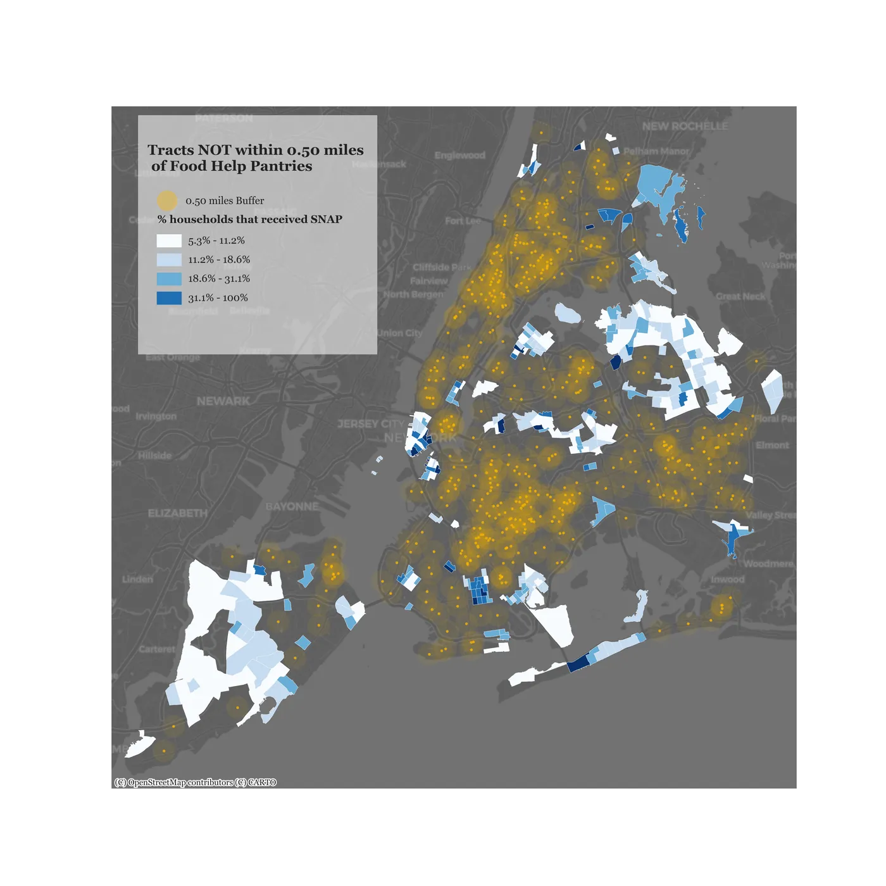

What the maps show
01 — SNAP reliance
Where New Yorkers rely most on federal food assistance
620,000
The darkest blues: tracts where over 30% of households received SNAP; cluster in the South Bronx, Central Brooklyn, and East New York.
These are the neighborhoods where a federal disruption hits hardest.

02 — Emergency food network
NYC has hundreds of pantries and soup kitchens, but are they in the right places?
700+
Food Help NYC maintains a network of emergency food providers across all five boroughs.
On paper, the coverage looks substantial. The question is whether the yellow dots
overlap with the darkest blue tracts from the previous map.

03 — Within 0.5 miles
Where SNAP households can walk to a pantry in under 10 minutes
0.5 mi
The gold buffers show 0.5-mile catchment zones around each pantry.
Tracts that fall inside are relatively well-covered.
The gaps — tracts with high SNAP reliance but no nearby pantry — are what matter.

04 — Within 0.25 miles
Tighten the threshold to 0.25 miles, and the picture gets worse
0.25 mi
At a 5-minute walk, coverage shrinks significantly. Many high-reliance tracts
that appeared covered at 0.5 miles fall outside the buffer.
For elderly residents, disabled households, or families without cars, even 0.5 miles can be too far.

05 — The gap
~35,000 SNAP households are not within walking distance of a backup food source
~35,000
The colored tracts here are SNAP-reliant neighborhoods
not covered by a pantry within 0.5 miles — roughly 6% of the city's SNAP households, but
concentrated in the Bronx, Southeast Queens, and outer Brooklyn,
where reliance is highest and alternatives fewest.
